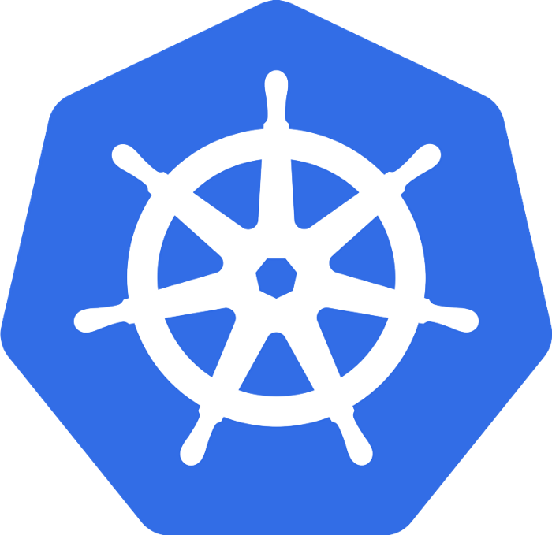

Cluster für Docker und rkt
"Application Server" für Container
Google-Projekt (auch: k8s, k8)
Konzepte
Node: Maschine im Cluster
Pod:
Kleinste Einheit, 1-n Container
1 Host, Ressource-Sharing
Controller: Mind. einer pro Cluster
Service:
Facade für Pods, z.B. ein Tier einer Application
Adressierung mittels DNS über ENV-Variablen
Verschiedene Distributionen: z.B. OpenShift
Lektion 7 - Container
Was fällt Ihnen zu Containern ein?
Kennen Sie?
Docker
Container
Dockerfiles
Images
Docker Compose
Kubernetes
Minikube
OpenShift
Referenzen
Kennen Sie Docker Hello World?
$ docker run --rm hello-world
Unable to find image 'hello-world:latest' locally
latest: Pulling from library/hello-world
0e03bdcc26d7: Pull complete
Digest: sha256:8c5aeeb6a5f3ba4883347d3747a7249f491766ca1caa47e5da5dfcf6b9b717c0
Status: Downloaded newer image for hello-world:latest
Hello from Docker!
This message shows that your installation appears to be working correctly.
To generate this message, Docker took the following steps:
1. The Docker client contacted the Docker daemon.
2. The Docker daemon pulled the "hello-world" image from the Docker Hub.
(amd64)
3. The Docker daemon created a new container from that image which runs the
executable that produces the output you are currently reading.
4. The Docker daemon streamed that output to the Docker client, which sent it
to your terminal.
To try something more ambitious, you can run an Ubuntu container with:
$ docker run -it ubuntu bash
Share images, automate workflows, and more with a free Docker ID:
https://hub.docker.com/
For more examples and ideas, visit:
https://docs.docker.com/get-started/Docker bietet
Prozess-Isolation
Virtuelle Netzwerke
Kommandozeilen-Werkzeuge
√úbersicht: Container und Virtualisierung

Was ist Kubernetes?

Architektur

Bildquelle: https://en.wikipedia.org/wiki/Kubernetes#/media/File:Kubernetes.png, Khtan66, CC-BY SA 4.0
{kind=link}
Docker Image mit Quarkus erzeugen (manuell)
Maven Artefakt erstellen
$ mvn package
# ...
[INFO] BUILD SUCCESS
[INFO] ------------------------------------------------------------------------
[INFO] Total time: 6.617 s
[INFO] Finished at: 2020-10-25T18:51:25+01:00
[INFO] ------------------------------------------------------------------------Image erzeugen
$ docker build -t quarkus/lesson03-rest -f src/main/docker/Dockerfile.jvm .
# ...
Successfully tagged quarkus/lesson03-rest:latestContainer starten
$ docker run -it -p 4321:8080 --rm quarkus/lesson03-restTest
$ curl -s http://localhost:4321/orders
[{"customerId":42,"orderDateTime":"2020-10-25T17:57:44.659Z[UTC]","orderId":1,"pizzaList":["Funghi"],"status":"LOST","totalPrice":6.5}]Variante: Native Build
$ mvn package -Pnative -Dnative-image.docker-build=true
# ....
[INFO] BUILD SUCCESS
[INFO] ------------------------------------------------------------------------
[INFO] Total time: 02:25 min
[INFO] Finished at: 2020-10-25T19:05:36+01:00
[INFO] ------------------------------------------------------------------------Image erzeugen
$ docker build -t quarkus/lesson03-rest-native -f src/main/docker/Dockerfile.native .
# ...
Successfully tagged quarkus/lesson03-rest-native:latestContainer starten
$ docker run -it -p 4321:8080 --rm quarkus/lesson03-restTest
$ curl http://localhost:4321/orders
[{"customerId":42,"orderDateTime":"2020-10-25T18:04:25.295Z[UTC]","orderId":1,"pizzaList":["Funghi"],"status":"LOST","totalPrice":6.5}]Kubernetes Extension
Generierung von kubernetes.yaml und kubernetes.json
Beeinflussung durch Properties möglich
JIB: Alternative für automatisches Bauen von Images
<dependency>
<groupId>io.quarkus</groupId>
<artifactId>quarkus-kubernetes</artifactId>
</dependency>
<dependency>
<groupId>io.quarkus</groupId>
<artifactId>quarkus-container-image-jib</artifactId>
</dependency>Kubernetes Extension
application.properties:
quarkus.container-image.build=true
quarkus.container-image.group=quarkus #optional, default to the system user name
quarkus.container-image.name=demo-app #optional, defaults to the application name
quarkus.container-image.tag=1.0 #optional, defaults to the application version
quarkus.kubernetes.mounts.my-volume.path=/where/to/mount #optionalMinikube
Minimalistisches Kubernetes Cluster (1 Node)
Lokale Tests und Entwicklung
Treiber zur Virtualisierung benötigt (z.B. virtualbox, kvm2, Docker)
Installation auf Ubuntu
# KVM
$ sudo apt install qemu-kvm libvirt-daemon-system
$ sudo adduser $USER libvirt
$ sudo systemctl enable virtlogd.socket
$ sudo systemctl restart virtlogd.socket
$ exec sudo su -l $USER
# Minikube
$ curl -LO https://storage.googleapis.com/minikube/releases/latest/minikube_latest_amd64.deb
$ sudo dpkg -i minikube_latest_amd64.deb
# kubectl
$ sudo snap install kubectl --classicMinikube
Starten
$ minikube start --driver=kvm2
üòÑ minikube v1.16.0 auf Ubuntu 20.04
✨ Using the kvm2 driver based on existing profile
üëç Starting control plane node minikube in cluster minikube
üîÑ Restarting existing kvm2 VM for "minikube" ...
üê≥ Vorbereiten von Kubernetes v1.20.0 auf Docker 20.10.0...
üîé Verifying Kubernetes components...
üåü Enabled addons: storage-provisioner, default-storageclass
üèÑ Done! kubectl is now configured to use "minikube" cluster and "default" namespace by default$ kubectl get pods -A
kube-system coredns-74ff55c5b-nhmkn 1/1 Running 2 100m
kube-system etcd-minikube 1/1 Running 2 100m
kube-system kube-apiserver-minikube 1/1 Running 2 100m
kube-system kube-controller-manager-minikube 1/1 Running 2 100m
kube-system kube-proxy-5972h 1/1 Running 2 100m
kube-system kube-scheduler-minikube 1/1 Running 2 100m
kube-system storage-provisioner 1/1 Running 4 100mMinikube Extension
Vereinfachung des Deployments nach Minikube
Keine externe Docker Registry
NodePort statt Ingress
Generierung von minikube.yaml und minikube.json
<dependency>
<groupId>io.quarkus</groupId>
<artifactId>quarkus-minikube</artifactId>
</dependency>Deployment nach Minikube
# Namespace anlegen
$ kubectl create namespace lesson07-docker
namespace/lesson07-docker created
# In neuen Namespace wechseln
$ kubectl config set-context --current --namespace=lesson07-docker
Context "minikube" modified.
# Minikube Docker Daemon verwenden
$ eval $(minikube -p minikube docker-env)
# Projekt und Image bauen
$ mvn package
# Projekt deployen
$ kubectl apply -f target/kubernetes/kubernetes.json
# bzw.
$ kubectl apply -f target/kubernetes/minikube.json
# Deployment prüfen
$ kubectl get deployments
$ kubectl get pods
$ kubectl get services
# Ermitteln der Adresse (bei Minikube Extension -> NodePort)
$ minikube service listAufgabe lesson07-docker
Aufgabenstellung
Binden Sie die Minikube und JIB Extensions in das Projekt lesson04-checks ein, konfigurieren und bauen Sie es.
Starten Sie Minikube
Legen Sie das Image von lesson04-checks dort als Deployment ab.
Erzeugen Sie 10 Pods
Hinweise
Sie können weitere Pod-Instanzen wie folgt erzeugen:
$ kubectl scale --replicas=3 deployment lesson07Optional: Liefern Sie beide Anwendungen aus Aufgabe 4 aus. Wie können Sie die URL für den RestClient konfigurieren?